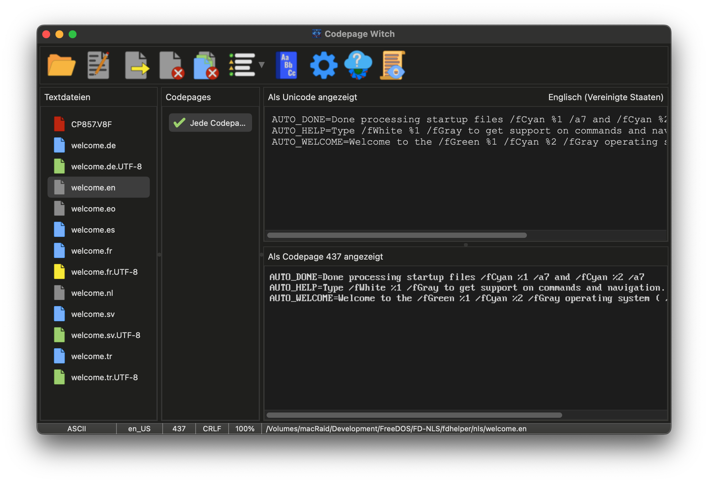

Das Antlitz der Hexe: Das Hauptfenster
Die Hauptoberfläche ist als Echtzeit-"Spiegel" zwischen Ihren Quelldateien und ihrem beabsichtigten Ziel konzipiert. Während das Layout einfach ist, verwendet die Hexe ein farbcodiertes System, um den Status und die Integrität Ihrer Dateien auf einen Blick zu kommunizieren.

Die Beschwörungen: Die Symbolleiste
Die Symbolleiste ist Ihre primäre Quelle für Magie. Sie beherbergt die Sprüche zum Öffnen von Dateien, zum Exportieren Ihrer Transmutationen und zum Zugriff auf die tieferen Einstellungen der Hexe.
 |
Öffnen: Durchsuchen Sie das Dateisystem, um eine oder mehrere Dateien auszuwählen. Drag-and-Drop kann ebenfalls verwendet werden, um Dateien oder ganze Verzeichnisse in den Dateikessel zu werfen. |
 |
Bearbeiten: Werfen Sie die ausgewählte Datei in Ihren bevorzugten externen Texteditor. Dies ermöglicht manuelle Verfeinerungen, ohne die Anwesenheit der Hexe zu verlassen. |
 |
Exportieren: Versiegeln Sie Ihre Transmutationen. Dies speichert die aktuell ausgewählte Datei mit der gewählten Codepage und den Zeilenenden-Einstellungen. |
 |
Schließen: Verbannen Sie die aktuell ausgewählte Datei aus dem Kessel. |
 |
Alle schließen: Waschen Sie den Kessel sauber und entfernen Sie alle Dateien aus der aktuellen Sitzung. |
 |
Filter: Grenzen Sie die Liste der Verzauberungen ein. Wechseln Sie zwischen Ansichten, um nur 100%-Übereinstimmungen, potenzielle Übereinstimmungen oder jede der Hexe bekannte Codepage anzuzeigen. |
 |
Wörterbuch: Konsultieren Sie die Master- und Benutzerwörterbücher. Hier können Sie der Hexe helfen, indem Sie ihren Wortschatz überprüfen und Wörter zu ihrem mehrsprachigen Wissen hinzufügen. |
 |
Optionen: Blicken Sie in die tieferen Mechaniken der Hexe. Passen Sie ihr Aussehen, ihr Verhalten und die automatischen Dateiprüfregeln an. |
 |
Updater: Suchen Sie am digitalen Horizont nach neueren Versionen der Codepage Witch. |
 |
Protokoll: Öffnen Sie das interne Hauptbuch der Hexe, um detaillierte Analyseberichte einzusehen oder Fehler zu untersuchen. |
Der Dateikessel: Die Status-Icons
Sobald Dateien hinzugefügt werden, beginnt die Hexe mit der Analyse ihres Inhalts. Die Farbe des Dateisymbols zeigt ihre Ergebnisse an:
| Die Analyse: Die Datei wird derzeit im Hintergrund verarbeitet. | |
| Unicode-Quelle: Eine UTF-8-kodierte Datei. Die Hexe hat ihre passendsten Codepages zugeordnet. | |
| Legacy-Quelle: Eine Codepage-kodierte Datei. Die Hexe nutzt statistische Analysen, um ihren Ursprung zu bestimmen. | |
| Reines ASCII: Einfacher 7-Bit-Text ohne Sonderzeichen. Sicher für jede Konvertierung. | |
| Das Omen: Ein Formatierungsfehler (wie ein fehlender Zeilenumbruch am Ende) wurde erkannt. | |
| Die Leere: Eine Binärdatei oder ein Lesefehler ist aufgetreten. |
Die Verzauberungen: Codepage-Auswahl
Neben der Dateiliste zeigt dieser Bereich, wie kompatibel Ihr Text mit verschiedenen Codepages ist.
- Kompatibilitätsgraph: Bei Unicode-Dateien erscheinen Graphen, die zeigen, wie viel Text sicher konvertiert werden kann. Bei Codepage-Dateien zeigen sie die statistische Wahrscheinlichkeit einer Sprachübereinstimmung an.
- Der Segen für jedes ASCII: Bei reinen ASCII-Dateien erscheint ein einziger Eintrag, da diese universell sind.
Die zwei Spiegel: Original vs. Transmutiert
Die rechten Bereiche ermöglichen es Ihnen, den aktuellen Zustand der Datei mit ihrer vorgeschlagenen Konvertierung zu vergleichen.
- Unicode-Betrachter (Oben): Zeigt die Datei als Standard-UTF-8-Text an.
- Codepage-Betrachter (Unten): Rendert den Text mit der gewählten Codepage. Nicht unterstützte Zeichen erscheinen als ¿.